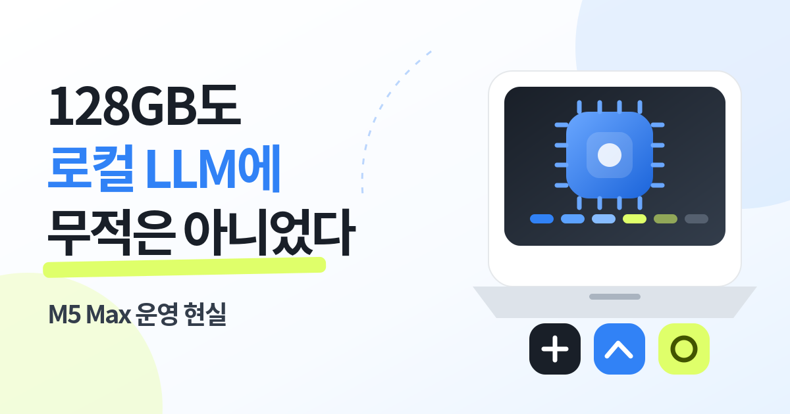

큰 모델을 올릴 선택지
128GB는 ‘무조건 빠른 AI’보다, 메모리 때문에 시도조차 못 하는 경우를 줄여주는 옵션이었습니다.
나는 예전부터 내 컴퓨터 안에서 돌아가는 AI를 갖고 싶었습니다. 그래서 MacBook Pro 16 M5 Max·통합 메모리 128GB·SSD 2TB를 골랐습니다. 막상 운영해 보니 메모리는 선택지를 넓혔지만, 실용성을 결정한 것은 모델 크기 하나가 아니라 양자화·컨텍스트·동시 실행의 균형이었습니다.

128GB는 ‘무조건 빠른 AI’보다, 메모리 때문에 시도조차 못 하는 경우를 줄여주는 옵션이었습니다.
모델, KV 캐시, 브라우저, 코딩 도구, 운영체제가 같은 통합 메모리 풀을 함께 사용합니다.
민감한 반복 작업은 로컬, 최고 품질과 최신 검증이 필요한 작업은 클라우드로 보냅니다.
내가 얻은 결론은 의외로 단순했습니다. 메모리 용량이 커지면 큰 모델을 올릴 수는 있습니다. 하지만 ‘올라간다’와 ‘매일 쓸 만하다’는 전혀 다른 이야기였습니다.
큰 모델 하나를 겨우 올리는 것보다, 조금 작은 모델을 빠르게 반복하고 브라우저·위키·코딩 도구를 함께 쓰는 쪽이 실제 업무에서는 더 나을 때가 많았습니다. 그래서 모델 이름보다 ‘완료된 작업당 시간’을 봐야 합니다.
클라우드 AI는 편합니다. 하지만 내 파일, 개인 위키, 코드, 대화 기록을 계속 읽는 나만의 자비스를 만들려면 로컬에서 돌아가는 모델도 직접 운영해봐야 한다고 생각했습니다.
처음부터 목표는 벤치마크 1등이 아니었습니다.
인터넷이 없어도 돌아가고, 개인 자료를 외부로 보내지 않고, 내가 원하는 도구와 연결할 수 있는 AI.
그런 환경을 만들고 싶었습니다.
그래서 메모리는 최대한 크게 잡았습니다.
안 되는 모델을 줄이고 싶었습니다.
그런데 막상 써보니 현실은 조금 달랐습니다. 128GB는 문을 많이 열어줬지만, 열린 문이 전부 실용적인 작업실은 아니었습니다.
Apple silicon에서는 CPU와 GPU가 같은 메모리 풀을 직접 봅니다. MLX도 이 구조를 활용합니다. 별도 VRAM 벽이 낮아 큰 모델을 올리기 좋지만, 그 128GB를 모델만 독점하는 것은 아닙니다. [출처 6]
메모리 부족 때문에 시작도 못 하는 경우가 줄어듭니다. 모델과 데이터가 한 메모리 풀에 있으니 Apple silicon용 런타임을 쓰기에도 자연스럽습니다.
운영체제, 브라우저 탭, IDE, 문서 앱, 모델 weights, KV 캐시가 같은 풀을 씁니다. 한 모델이 올라가도 동시 작업에서 메모리 압력이 커질 수 있습니다.
로컬 LLM은 ‘실행 성공’만 보면 판단을 틀리기 쉽습니다. 나는 같은 질문을 반복해서 아래 다섯 가지를 함께 봅니다.
모델 다운로드가 아니라 메모리에 올라가 사용할 수 있을 때까지.
질문을 보낸 뒤 첫 토큰이 화면에 나오는 시간.
초당 토큰뿐 아니라 긴 답을 끝까지 기다릴 수 있는지.
브라우저와 코딩 도구를 같이 켰을 때 메모리 압력.
아래 계산기는 계획용입니다. 실제 GGUF·MLX 파일 크기와 런타임 메모리는 모델 구조, 양자화 그룹, KV 캐시, 프레임워크 버전에 따라 달라집니다. 그래도 ‘들어가느냐’만 보는 것보다 훨씬 현실적인 출발점이 됩니다.
weights = params(B) × bits ÷ 8총 추정 = weights × (1 + overhead) + KV × sessions + OS reserve벤치마크 사이트 숫자는 참고만 합니다. 내가 실제로 쓰는 한국어 문서, 코드, 개인 위키 질문에서 얼마나 잘 작동하는지가 더 중요했습니다. 아래 값은 브라우저에 저장되며 CSV로 내려받을 수 있습니다.
| 모델/버전 | 양자화 | 컨텍스트 | 로드(s) | TTFT(s) | Prefill t/s | Decode t/s | Peak GB | 품질·실패·메모 |
|---|---|---|---|---|---|---|---|---|
측정 조건에는 런타임 버전, 모델 파일 해시, 전원 연결 여부, 첫 실행/재실행, 프롬프트 길이도 함께 남기는 편이 좋습니다. 숫자가 바뀌어도 원인을 추적할 수 있기 때문입니다.
나는 둘을 경쟁 관계로 보지 않습니다. 내 자료를 가까이 두고 반복 처리하는 일과, 최고 성능·최신 정보·고난도 검증이 필요한 일은 성격이 다릅니다.
내 자료가 중심이고 반복이 많은 작업입니다.
현재 최고 성능과 외부 도구가 중요한 작업입니다.
로컬이 수집·정리·초안을 맡고, 클라우드가 어려운 부분을 보완합니다.
무조건 128GB를 추천하는 글은 아닙니다. 내가 실제로 어떤 모델과 작업을 돌릴지에 따라 적정 메모리가 달라집니다.
7~14B급으로 충분한 분류·요약 작업인지, 30B·70B급 추론이 필요한지 먼저 나눕니다.
짧은 채팅과 64K 이상 에이전트·코딩 작업은 같은 메모리 계획이 아닙니다.
브라우저, IDE, Docker, Obsidian, 벡터DB를 동시에 쓰면 모델 전용 여유가 줄어듭니다.
개인 1세션과 여러 에이전트·가족·팀 사용은 KV 캐시와 서버 구성이 달라집니다.
개인정보, 오프라인, 반복 비용, 커스터마이징 중 무엇을 얻으려는지 적습니다.
모델 다운로드, 런타임 업데이트, 라이선스, 장애 로그를 직접 다룰 시간이 필요합니다.
여러 양자화와 모델 버전, 캐시, 데이터셋을 쌓으면 저장공간도 빠르게 줄어듭니다.
하드웨어 일시비용과 API 월비용, 전기·관리 시간을 같은 기간으로 비교합니다.
아래는 보장표가 아니라 계획표입니다. 실제 가능 여부는 위 계산기와 본인 모델 파일로 다시 확인해야 합니다.
가벼운 개인 AI, 7~14B급, 일부 중형 양자화 모델을 한 번에 하나씩 쓰는 환경.
30B급과 더 큰 양자화 모델을 시험하고, 개발 도구를 같이 쓰려는 사용자.
70B급 양자화 모델, 긴 문서, 여러 도구를 함께 운영하거나 더 큰 모델을 실험하려는 사용자.
큰 모델을 계속 다운로드하는 것보다, 어떤 작업을 어떤 모델에 맡길지 정하는 편이 훨씬 오래 갑니다.
런타임 하나와 실제 과제 10~20개로 시작합니다.
로컬에 남길 일과 클라우드로 보낼 일을 나눕니다.
잘 되는 모델만 남기고 반복 작업을 연결합니다.
로컬이라는 이유만으로 자동으로 안전하거나, open weight라는 이유만으로 자유롭게 상업 이용할 수 있는 것은 아닙니다.